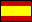

Thanks to kind volunteers and supporters,
some translations are under way and some are complete.
Some are directly translating the book as it stands.
Others have added additional translated content (eg Germany-related
materials for a German edition).
Simplified Chinese
 |
|
Chinese translation available from amazon.cn
|
Thank you to the Chinese Academy of Sciences for organizing the translation and publication!
|
|
Synopsis
|
 (download pdf) (3.8M)
(download pdf) (3.8M)
|
Thank you to Paul Wang, Carlos Chau and Yanqin Wu.
A full translation was published in 2013 by the Chinese Academy of Sciences
|
Deutsch
 |
Übersicht [Synopsis]
|
(pdf)
(1M)
|
Danke,
Robert Gieseke, für die Deutsche Übersetzung!
|
|
Das ganze Buch -
'Nachhaltige Energiegewinnung - ohne
die heiße Luft'
|
pdf (12M)
|
Danke,
Thomas F. Kerscher, für die Deutsche Übersetzung!
|
|
Auflage 2:
'Nachhaltige Energiegewinnung - ohne
die heiße Luft - Daten für Deutschland'
[einzelne Kapitel]
|
pdf (13.5M)
|
Nochmals vielen Dank,
Thomas F. Kerscher!
|
Deutsch - Österreich (Austria!)
 |
'Nachhaltige Energiegewinnung - ohne
die heiße Luft
- Daten für Österreich'
|
pdf (16M)
|
Danke,
Dominik Stelzen!
|
| Polski
|
The whole book -
Zrównoważona energia — bez bicia piany
|
Part I (pdf) | the rest of the book in PDF files
|
Thank you, Marcin Popkiewicz!
(Also available from
eko.org.pl [HTML and PDF format]
and
ziemianarozdrozu.pl [HTML and PDF format], and available on paper
ISBN 978-83-923848-1-6)
9788392384816
|
Italiano

|
Synopsis (12 pages) |
Energia sostenibile – senza aria fritta
postscript (3.2M) |
pdf (1.7M)
|
Thank you to
Alessandro Pastore
and
Stefano Chesi!
|
| The whole book (431 pages) - prima revisione
|
Energia sostenibile - senza aria fritta
low-resolution pdf (22M) |
high-resolution pdf (32M)
|
Thank you to
Alessandro Pastore, Javier Oca, Valentina Rossi, Alberto Marcone,
Paolo Errani, and Simone Gallarini!
|
Francais
 |
Synopsis (10 pages) |
L'énergie durable - pas seulement du vent!
pdf (1.1 M)
|
Thank you Jean-Pierre Levraud (Institut Pasteur),
Sandou Moussa
(EPFL),
and Jean-Yves Le Boudec (EPFL)!
|
| The Whole Book - available on paper from amazon uk,
amazon.fr,
fnac,
|
L'énergie durable - pas que du vent!
pdf (11 M)
| buy from amazon.co.uk
|
translation provided by AMIDES
www.amides.fr - thank you!
|
|
Espanol

|
Sinopsis (10pp) | "Energía Sostenible - sin palabrería" [PDF 1.3M] | Translated by UK embassy in Spain - thank you, foreign office! |
Indonesian

|
Synopsis (11pp) | "MARi BiCARA ANGKA, BUKAN 'KATANYA' - Energi Lestari
Tanpa Cakap Angin" [PDF] | - thank you Pionir books! |
New Zealand

|
"A SUSTAINABLE ENERGY FUTURE FOR NZ (WITHOUT THE HOT AIR)"
by Phil Scadden and Oliver Bruce
Read this "Translation" for New Zealand in a sequence of Blogs
- or download the pdf version
|
Australian

|
Australian Sustainable Energy by the numbers [free PDF] | Translated by Peter Seligman and hosted on the
Melbourne Energy Institute website
[further information].
See also
Zero Carbon Australia Stationary Energy Plan
(ZCA2020) from The University of Melbourne Energy Research Institute
|
American

|
"Visualizing Sustainable Energy for the USA" [PDF 1M] | 3 pages
by David MacKay |
Nederlands
 |
Overzicht [Synopsis]
(pdf)
(1.7 M)
|
translation provided
by
Delft Energy Initiative
|
|
De Energievoorziening van Nederland
(booklet)
|
A Translation for the Netherlands situation, in Dutch, by
Delft Energy Initiative (2010)
|
Slovak

|
Review, and complete translation
(download pdf)
(13M)
|
Many thanks to Alexander Ac [acalexATusbe.cas.cz]
for organizing this!
|
Slovene

|
Slovene translation published on paper
and available for
download (58M PDF) from UK
download PDF from en-lite.si
(December 2013)
Thank you to EN-LITE, U. Mariboru, Consensus, the British Embassy in Ljubljana, the Republika Slovenija
Ministry of Infrastructure, and Energetika!
|
|
|
Magyar [Hungarian]
|
Fenntartható energia — mellébeszélés nélkül
[Synopsis]
|
(3.2 M)
|
A könyv fordítását Dr. Both Előd készítette,
a magyar kiadást a Vertis Környezetvédelmi Pénzügyi Zrt. gondozza.
The whole book has also been translated and
published in Hungary.
[libri.hu]|facebook|
Thank you, James Atkins and Vertis!
ISBN: 978-963-2795-75-1
EAN: 9789632795751
|
|
український (Ukrainian)
|
Synopsis
|
(download pdf) (1.2M)
|
Thank you to Andriy Kopets!
(I believe that a full translation is on the way too.)
|
Anyone wanting to make translations of the book as a volunteer
or professionally, do get in touch with my publisher.
There is an email list for translators.